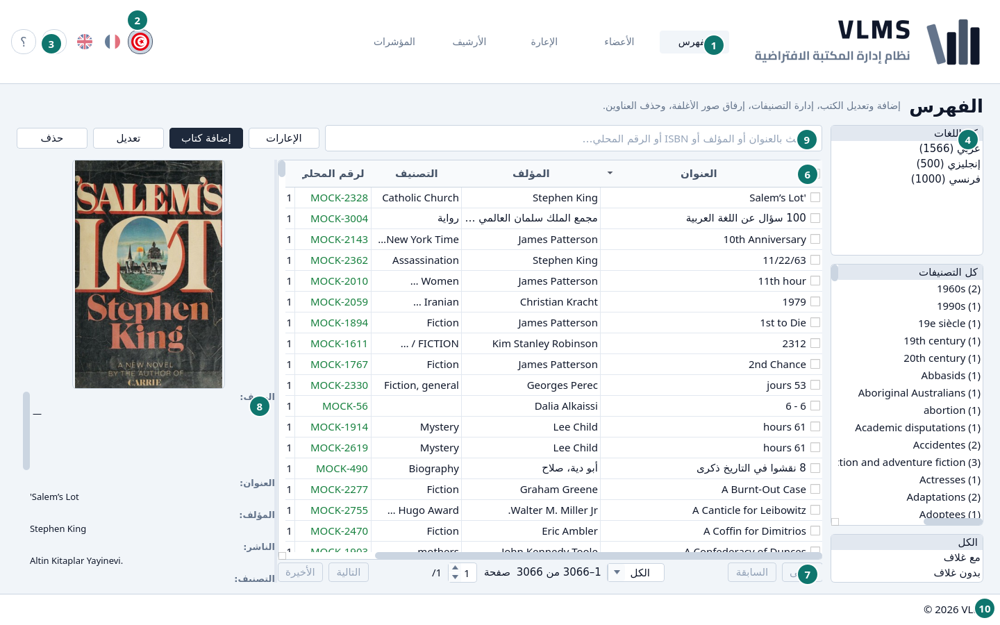
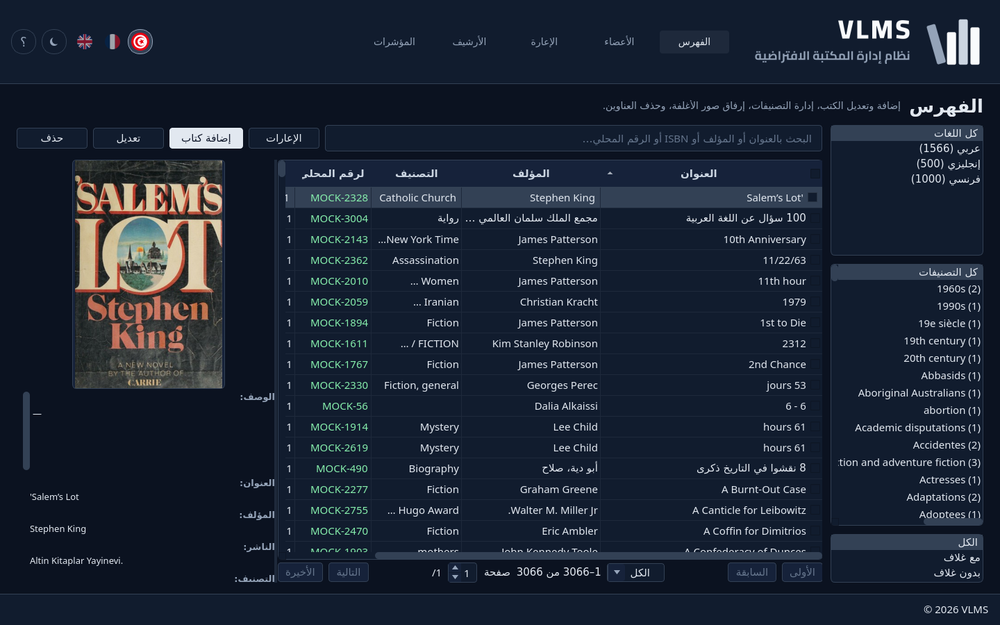
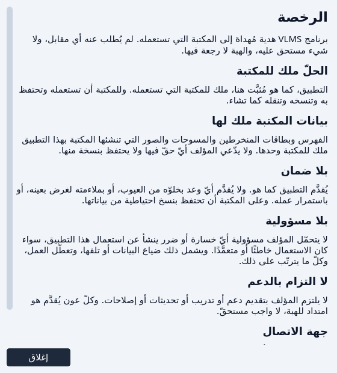
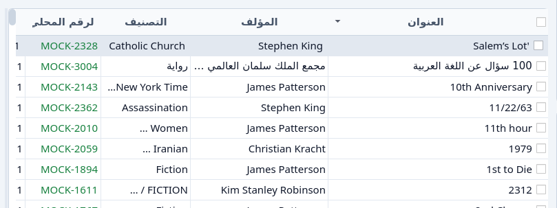

البداية مع النافذة
النافذة، وصفحات القوائم، والفرز، وعلامات التحديد.
افتح VLMS. تظهر النافذة على الفهرس، باللغة والسمة الفاتحة أو الداكنة التي تركتها.


- الفهرس — الشاشة التي أنت فيها. بجانبها الأعضاء والإعارة والأرشيف والمؤشرات.
- الأعلام الثلاثة. العلم المعبّأ هو لغة الشاشة. اختيار علم آخر يبدّل التطبيق كله دفعة واحدة.
- زر السمة، وبجانبه ؟. زر السمة يشغّل السمة الداكنة أو يطفئها. ؟ يفتح هذا الدليل.
- مرشّحات هذه الشاشة.
- البحث.
- القائمة.
- شريط الصفحات.
- تفاصيل السطر المظلّل.
- أزرار هذه الشاشة.
- التذييل. اسم المكتبة رابط.


التذييل والرخصة
سطر التذييل يفتح الرخصة. تقول إن التطبيق هبة لهذه المكتبة، وإن المكتبة تملك التطبيق كما هو مثبّت هنا، وإن الفهرس وبيانات الأعضاء والصور ملك المكتبة. لا ضمان.


أغلقها بـإغلاق.
شكل كل قائمة
الفهرس والأعضاء والإعارة والأرشيف على الشكل نفسه.
- عمود المرشّحات على الجانب. الاختيار فيه يضيّق القائمة. الكل يعني أن هذا المرشّح لا يضيّق شيئاً.
- البحث يتبع الكتابة. إفراغ الخانة يعيد القائمة كاملة.
- الجدول هو القائمة. اضغط سطراً لتظلّله. لوحة التفاصيل تعرض عندها ذلك السطر.
- شريط الصفحات تحت الجدول. يفتح على الكل، فتُحمَّل القائمة المرشّحة كلها. يمكن اختيار 20 أو 50 أو 100 بدلاً من ذلك. الأولى والأخيرة تقفزان إلى الطرفين، وخانة الصفحة تقفز إلى صفحة. إذا قلّت القائمة المرشّحة عن 20 سطراً، يختفي الشريط.
- لوحة التفاصيل هي السطر المظلّل، مع صورته إن وُجدت.
- الأزرار هي عمل هذه الشاشة: الإضافة والتعديل والإعارة والحذف وما يتبعها. الزر يتبع السطر المظلّل. يبقى رمادياً إذا كان ذلك السطر لا يقبل الإجراء.
الفرز
اضغط عنوان عمود للفرز به. اضغطه مرة أخرى لعكس الاتجاه. العنوان يبيّن اتجاه القائمة.


علامة التحديد في أول العنوان ليست جزءاً من الفرز. اضغط وسط العنوان، لا العلامة. انظر علامات التحديد.
علامات التحديد
علامة في الخلية الأولى من السطر تخصّص ذلك السطر لزر. علامة العنوان تخصّص كل أسطر الصفحة، أو تمسحها.

- علامة السطر المظلّل.
- علامة العنوان.
حذف واسترجاع وحذف نهائي تعمل على كل سطر محدَّد. إذا لم يُحدَّد شيء، تعمل على السطر المظلّل وحده. تبقى هذه الأزرار متاحة ما دام أي سطر محدَّداً، حتى إذا كان السطر المظلّل نفسه لا يقبل الإجراء. كل سطر محدَّد يُفحص وحده: السطر الذي لا يمكن إزالته يُتجاوز، والباقي يمضي.
العلامة مجرد إشارة. تُنسى حين تُحمَّل القائمة من جديد.